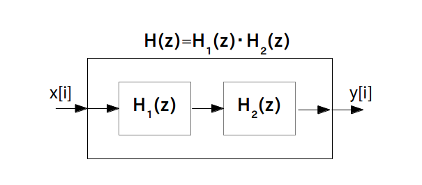
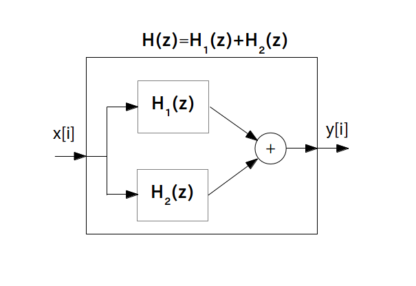

前ページで 3 つの基本パーツについて学びましたので、次は基本パーツを使って複雑な伝達関数を持つフィルタのプロック図を描いてみましょう。
そのために、ここではまず 2つ以上のフィルタを合成して作ったフィルタの伝達関数の求め方について説明します。
また次のページではフィードバック機構について説明します。
直列結合とは、伝達関数 $\textrm{H}_1(z)$ を持つフィルタ 1 と伝達関数 $\textrm{H}_2(z)$ を持つフィルタ 2 を直列に結合して新しいフィルタを作り出すことです。
この新しいフィルタの伝達関数は 2 つのフィルタの伝達関数の積
となります。以上の関係を示したブロック図は次の様になります。

並列結合とは、伝達関数 $\textrm{H}_1(z)$ を持つフィルタ 1 と伝達関数 $\textrm{H}_2(z)$ を持つフィルタ 2 を並列に結合して新しいフィルタを作り出すことです。この新しいフィルタの伝達関数は 2 つのフィルタの伝達関数の和
\begin{align*} \textrm{H}(z) = \textrm{H}_1(z) + \textrm{H}_2(z) \end{align*}となります。以上の関係を示したブロック図は次の様になります。
